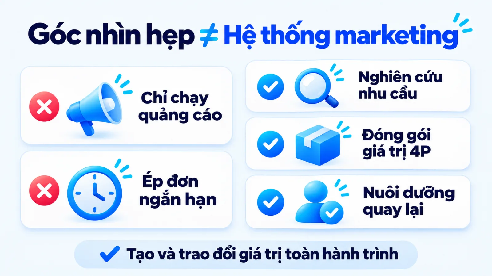
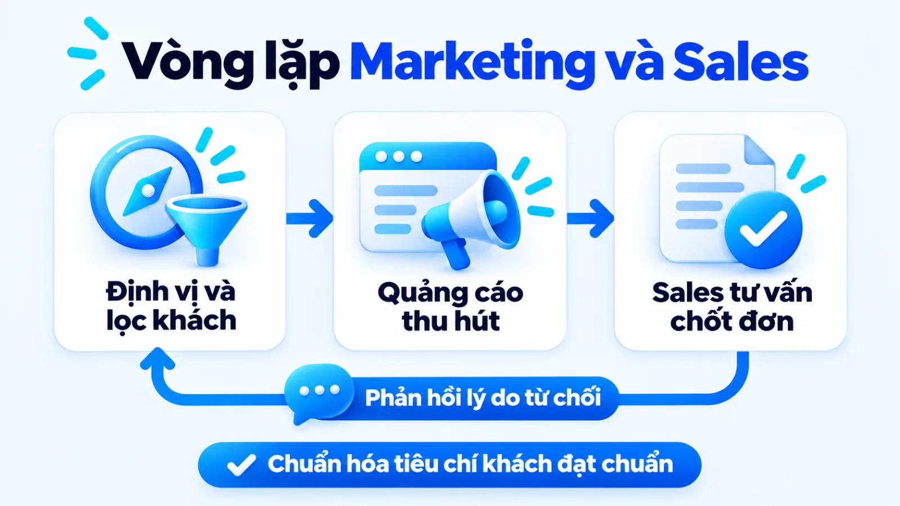
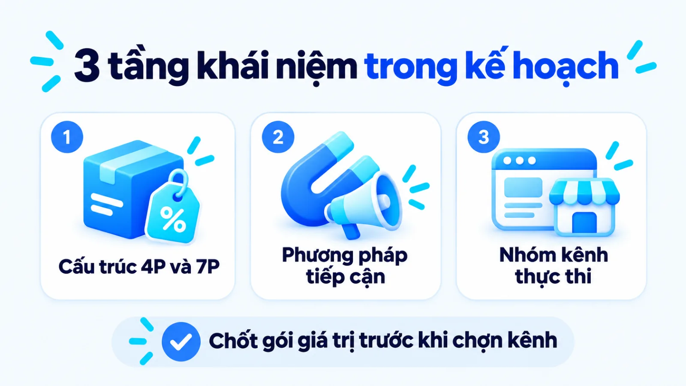
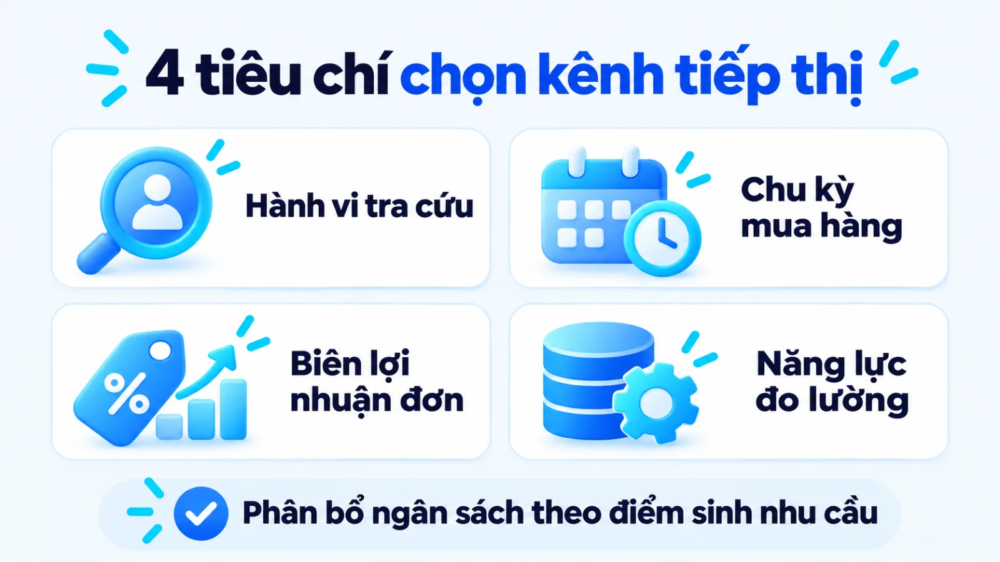
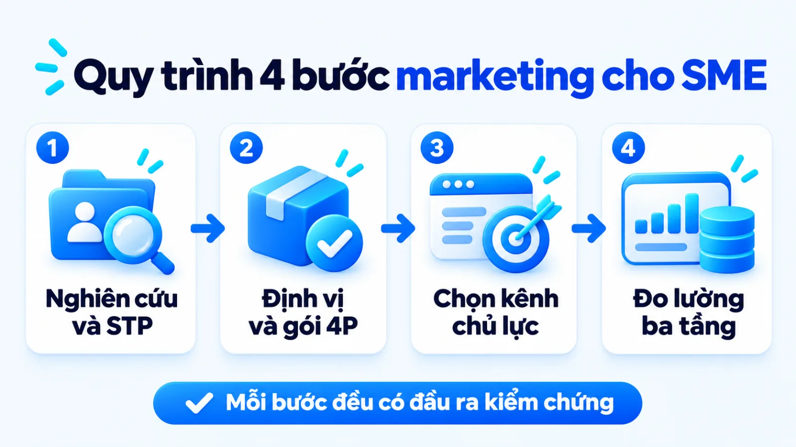
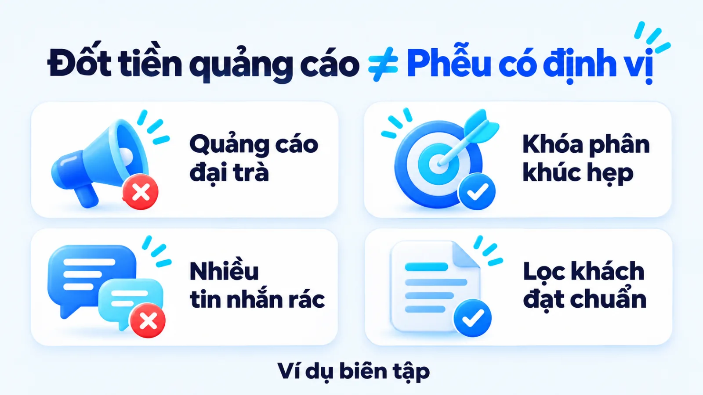
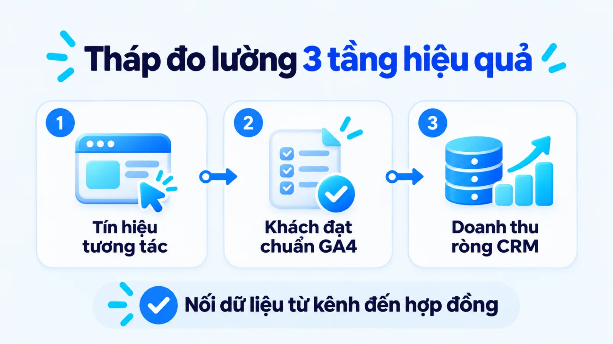

Marketing là gì, cách triển khai cho SME
Hiểu đúng marketing là gì giúp doanh nghiệp nhận ra đây là hệ thống hoạt động từ nghiên cứu thị trường, thiết kế giải pháp, định giá, phân phối đến truyền thông nhằm tạo và trao đổi giá trị thực với khách hàng mục tiêu. Trong vận hành doanh nghiệp vừa và nhỏ, nhiều đội ngũ vẫn đánh đồng toàn bộ hoạt động tiếp thị với việc chạy quảng cáo ngắn hạn hoặc thúc ép doanh số tức thời. Khi bỏ qua bước chọn phân khúc và định vị lợi thế ngay từ đầu, ngân sách truyền thông càng mở rộng thì chi phí thu hút khách hàng càng đội lên mà đội bán hàng vẫn thiếu người mua đạt chuẩn. Tôi là Lê Tuấn Việt, Marketing Leader tại TAKI Group. Trong bài viết này, tôi làm rõ ranh giới giữa tiếp thị với quảng cáo và bán hàng, tiêu chí chọn loại hình phù hợp nguồn lực cùng cách nối bốn bước triển khai vào hệ thống đo lường thực tế.
- Đăng ngày
- Cập nhật

Tóm tắt nhanh
- Marketing không đồng nhất với quảng cáo hay bán hàng: tiếp thị bắt đầu từ trước khi có sản phẩm để thiết kế giá trị và kéo dài tới sau giao dịch để giữ chân khách hàng.
- Doanh nghiệp vừa và nhỏ cần tách rõ ba tầng khái niệm gồm mô hình cấu trúc giá trị 4P hoặc 7P, phương pháp tiếp cận và nhóm kênh thực thi để tránh phân bổ ngân sách dàn trải.
- Quy trình triển khai chuẩn đi qua bốn bước tuần tự từ nghiên cứu thị trường, định vị gói 4P, chọn kênh khớp nguồn lực đến thiết lập bảng đo lường chuyển đổi định kỳ.
- Hiệu quả marketing phải được đọc xuyên suốt ba tầng từ tín hiệu tương tác bề nổi, khách hàng tiềm năng đạt chuẩn trên trang đích đến doanh thu ròng xác nhận trong hệ thống bán hàng.
Mục lục bài viết8 phần
Marketing là gì và vai trò trong doanh nghiệp
Marketing (tiếp thị) là hệ thống hoạt động từ nghiên cứu thị trường, thiết kế giải pháp, định giá, phân phối đến truyền thông nhằm tạo và trao đổi giá trị thực cho khách hàng mục tiêu gắn với lợi nhuận bền vững. Hiểu đúng marketing là gì giúp chủ doanh nghiệp quản trị toàn hành trình mua thay vì chỉ chạy quảng cáo ngắn hạn.
Trong vận hành tại các SME (doanh nghiệp vừa và nhỏ), nhiều chủ doanh nghiệp chỉ nghĩ tới tiếp thị khi hàng tồn kho hoặc khi cần chạy quảng cáo. Cách làm cắt ngang này biến bộ phận tiếp thị thành nơi tiêu tiền cuối phễu, tách rời khỏi việc chọn phân khúc, định giá và chăm sóc sau mua.

Bản chất trao đổi giá trị và định nghĩa từ AMA
Theo định nghĩa chính thức được hội đồng học thuật thông qua năm 2007 và tái phê duyệt năm 2017 của Hiệp hội Marketing Hoa Kỳ (AMA), tiếp thị là hoạt động, tập hợp thiết chế và quy trình nhằm tạo ra, truyền thông, phân phối và trao đổi các đề xuất có giá trị cho khách hàng, đối tác và xã hội.
Theo mục từ chuyên khảo năm 2024 trên Encyclopaedia Britannica, quan điểm quản trị của giáo sư Philip Kotler xác định tiếp thị là quá trình khám phá, tạo lập và chuyển giao giá trị nhằm thỏa mãn nhu cầu thị trường mục tiêu có lợi nhuận. Khung lý thuyết này đặt trọng tâm vào việc thiết kế giá trị từ gốc thay vì chỉ mua sự chú ý nhất thời.
Vai trò của marketing trong doanh nghiệp SME
Đối với doanh nghiệp vừa và nhỏ có nguồn vốn hữu hạn, vai trò của marketing trong doanh nghiệp nằm ở khả năng bảo vệ dòng tiền và dẫn đường cho hoạt động kinh doanh. Bốn vai trò trọng yếu trực tiếp quyết định sức sống của doanh nghiệp nhỏ bao gồm:
- Kiểm chứng nhu cầu: Thu thập dữ liệu hành vi người mua và đối thủ trước khi nhập hàng, giúp doanh nghiệp tránh làm ra sản phẩm lệch cầu.
- Giữ biên lợi nhuận: Chỉ rõ lý do khách chọn bạn thay vì đối thủ, giúp đơn vị tránh phải chạy đua hạ giá làm hụt biên lãi gộp.
- Tạo nguồn khách chuẩn: Thu hút và lọc đúng nhóm người mua có khả năng chi trả, giúp đội ngũ kinh doanh nâng tỷ lệ chốt đơn.
- Tăng giá trị vòng đời: Duy trì trải nghiệm sau mua để thúc đẩy khách đặt hàng lặp lại, giảm dần phụ thuộc vào chi phí tìm khách mới.
Khi bốn vai trò này vận hành liền mạch trong một hệ thống marketing tổng thể, chủ doanh nghiệp sẽ biết mỗi đồng ngân sách đang giải quyết khâu nào trên phễu chuyển đổi. Ngược lại, nếu tách nghiên cứu thị trường khỏi truyền thông, báo cáo có thể ghi nhận nhiều lượt xem nhưng doanh thu vẫn dậm chân tại chỗ.
Ngành marketing là gì và khác gì bộ phận thực thi
Nhiều người mới tìm hiểu ngành marketing là gì thường đồng nhất chương trình đào tạo học thuật với bộ phận tiếp thị tại công ty nhỏ. Về chuyên môn, ngành này chia thành năm nhánh gồm nghiên cứu thị trường, quản trị thương hiệu, phát triển sản phẩm, phân phối và truyền thông, nhưng nhân sự tại doanh nghiệp nhỏ thường chỉ phụ trách quảng cáo nên người lãnh đạo phải tự nắm phần định vị và định giá.
Marketing khác quảng cáo và bán hàng thế nào
Marketing bao quát toàn bộ quá trình từ nghiên cứu nhu cầu, định vị giá trị đến nuôi dưỡng khách hàng sau mua, trong khi quảng cáo chỉ là công cụ truyền thông trả phí và bán hàng là khâu chuyển đổi nhu cầu thành giao dịch. Năm tiêu chí trong bảng dưới đây giúp doanh nghiệp phân định rõ ranh giới vận hành.
| Tiêu chí | Hệ thống Marketing | Quảng cáo và Bán hàng |
|---|---|---|
| Mục tiêu | Tạo vị thế cạnh tranh, thu hút nhu cầu chuẩn và giữ chân dài hạn | Quảng cáo mở rộng độ phủ thông điệp; bán hàng chốt đơn và thu tiền |
| Điểm bắt đầu | Trước khi có sản phẩm, khởi đi từ nghiên cứu và chọn phân khúc | Sau khi gói sản phẩm, mức giá và thông điệp định vị đã hoàn tất |
| Đầu ra chính | Chân dung khách hàng, gói 4P, nguồn khách chuẩn và tỷ lệ mua lại | Quảng cáo tạo lượt hiển thị, lượt nhấp; bán hàng tạo doanh thu kỳ |
| Kỳ đánh giá | Trung và dài hạn theo tháng, quý, năm gắn với chuyển đổi chiến dịch | Ngắn hạn theo ngày, tuần hoặc từng chu kỳ chiến dịch và chỉ tiêu |
| Cách phối hợp | Định hướng thông điệp, cung cấp công cụ và tiêu chuẩn lọc khách hàng | Triển khai tại điểm chạm và phản hồi lý do khách từ chối mua hàng |
Giới hạn khi đọc bảng: sự phân tách trên nhằm làm rõ chức năng quản trị, không có nghĩa ba khâu vận hành rời rạc. Theo hướng dẫn chính thức của Cơ quan Quản lý Doanh nghiệp Nhỏ Hoa Kỳ (SBA), chiến lược tiếp thị xác định cách thu hút và giữ chân người mua, còn chiến lược bán hàng quy định quy trình chuyển đổi giao dịch thực tế.

Để hai bộ phận khớp nhau, dữ liệu phải chảy theo vòng khép kín hai chiều: bộ phận tiếp thị trang bị hồ sơ khách hàng và bảng lợi thế cạnh tranh cho đội kinh doanh. Chiều ngược lại, mỗi tuần đội bán hàng ghi nhận tỷ lệ khách sai phân khúc và lý do từ chối giá để người hoạch định chỉnh lại thông điệp nhắm chọn.
Mô hình marketing mix và các loại hình phổ biến
Mô hình marketing mix (tổ hợp tiếp thị 4P) chuyển hóa chiến lược định vị thành bốn nhóm quyết định thực thi gồm Sản phẩm, Giá bán, Phân phối và Xúc tiến, đồng thời tách biệt rõ với phương pháp tiếp cận và các nhóm kênh triển khai. Nắm vững cấu trúc phân tầng này giúp doanh nghiệp tránh xếp chồng khái niệm khi lập kế hoạch.
Một lỗi phổ biến trong nhiều tài liệu tổng hợp là xếp chung công cụ tìm kiếm, tiếp thị nội dung, điểm bán và mô hình 4P vào cùng một danh sách. Thực tế, người phụ trách cần tách bạch ba lớp gồm mô hình cấu trúc giá trị, phương pháp tiếp cận là Inbound Marketing (thu hút tự nhiên) hay Outbound Marketing (chủ động đẩy thông điệp), và nhóm kênh thực thi.

4P trong marketing là gì và giới hạn với dịch vụ
Dưới góc nhìn ra quyết định của chủ doanh nghiệp, 4P trong marketing là gì được giải mã qua bốn biến số Sản phẩm, Giá bán, Phân phối và Xúc tiến. Theo tài liệu tổng thuật năm 2024 của Encyclopaedia Britannica, mô hình này được giáo sư E. Jerome McCarthy hệ thống hóa vào năm 1960 nhằm giải quyết bốn câu hỏi vận hành dưới đây:
- Product (Sản phẩm): Giải pháp xử lý nỗi đau cụ thể nào của khách hàng, có quy cách đóng gói hay bảo hành gì khác biệt so với đối thủ?
- Price (Giá bán): Mức giá niêm yết, chiết khấu và biên lãi gộp có khớp khả năng chi trả của khách đồng thời đủ bù đắp chi phí tiếp thị không?
- Place (Phân phối): Khách hàng mục tiêu tìm mua ở đâu, doanh nghiệp nên bán trực tiếp qua web, sàn thương mại điện tử hay qua đại lý?
- Promotion (Xúc tiến): Doanh nghiệp dùng thông điệp gì và phối hợp công cụ nào giữa quảng cáo, quan hệ công chúng, khuyến mãi với đội bán hàng?
Bốn chữ P nguyên bản vốn dựa trên hàng hóa vật lý hữu hình nên chưa bao quát hết đặc thù vô hình của ngành dịch vụ. Cũng theo tư liệu lịch sử kinh tế năm 2024 trên Encyclopaedia Britannica, hai nhà nghiên cứu Booms và Bitner đã mở rộng mô hình thành 7P vào năm 1981 bằng cách thêm People (Con người), Process (Quy trình) và Physical Evidence (Bằng chứng hữu hình). Khi kinh doanh dịch vụ, bạn nên áp dụng mô hình chiến lược 7P để chuẩn hóa trải nghiệm.
Các loại hình marketing phổ biến theo mục tiêu
Sau khi đóng gói xong đề xuất giá trị bằng khung 4P hoặc 7P, bước tiếp theo là chọn hình thức đưa giá trị đó ra thị trường. Bảng dưới đây phân loại năm nhóm hoạt động trong các loại hình marketing phổ biến gồm Marketing truyền thống, Digital Marketing (tiếp thị kỹ thuật số), Content Marketing (tiếp thị nội dung), Performance Marketing (tiếp thị hiệu suất) và Trade Marketing (tiếp thị tại điểm bán) theo điều kiện nguồn lực.
| Nhóm hoạt động | Phù hợp khi cần | Đánh đổi nguồn lực |
|---|---|---|
| Truyền thống | Tiếp cận tệp khách địa phương qua biển bảng, sự kiện hoặc ấn phẩm | Chi phí sản xuất và thuê vị trí ban đầu lớn, khó đo chuyển đổi |
| Kỹ thuật số | Chạm đúng người mua trên môi trường số qua tìm kiếm, mạng xã hội | Đòi hỏi nhân sự biết vận hành công cụ số, quản trị và tối ưu |
| Nội dung | Xây dựng thẩm quyền chuyên môn, giải đáp thắc mắc và nuôi niềm tin | Tốn thời gian nghiên cứu và biên tập sâu, kết quả có độ trễ |
| Hiệu suất | Tạo khách hàng tiềm năng hoặc đơn hàng nhanh qua quảng cáo trả phí | Chi phí phụ thuộc đấu thầu nền tảng, dừng tiền là giảm truy cập |
| Tại điểm bán | Chiếm lĩnh vị trí trưng bày, kích cầu tại cửa hàng và đại lý | Phụ thuộc vào chiết khấu thương mại, quầy kệ và đội thị trường |
Giới hạn khi đọc bảng: năm nhóm hoạt động trên không loại trừ lẫn nhau mà phân chia theo môi trường tiếp cận và mục tiêu phễu. Khi triển khai thực tế, người phụ trách cần bóc tách tiếp từng nhóm thành các chiến thuật marketing cụ thể khớp với năng lực nhân sự nội bộ trong từng quý, tránh mở cùng lúc năm mặt trận khi đội ngũ còn mỏng.

Khi nào chọn marketing truyền thống hay digital
Quyết định chọn marketing truyền thống hay triển khai digital marketing phụ thuộc vào bốn tiêu chí gồm nơi khách hàng tìm thông tin, chu kỳ mua, biên lợi nhuận đơn hàng và năng lực đo lường. Với cửa hàng khu dân cư hoặc đại lý vật tư tỉnh, hoạt động tại điểm bán vẫn tạo lượng khách rất thực tế; ngược lại, khi người mua tra cứu mạng trước khi chọn, kênh số sẽ giữ vai trò chủ lực.
Trong nhánh kỹ thuật số, hai trụ cột thường đi cặp là SEO (tối ưu hóa công cụ tìm kiếm) và SEM (tiếp thị qua công cụ tìm kiếm). Theo hướng dẫn năm 2024 của Google Search Central, SEO giúp bộ máy tìm kiếm hiểu nội dung web để kết nối người dùng có nhu cầu tự nhiên với trang đích. Kết hợp kênh này cùng content marketing chuyên sâu giúp giảm dần chi phí thu hút khách dài hạn.
Marketing là làm gì: Quy trình 4 bước cho SME
Trong vận hành thực tế tại doanh nghiệp vừa và nhỏ, câu hỏi marketing là làm gì được cụ thể hóa thành quy trình bốn bước tuần tự: nghiên cứu thị trường để chọn phân khúc, định vị giá trị và thiết kế gói 4P, chọn kênh thực thi khớp nguồn lực, rồi thiết lập hệ đo lường chuyển đổi để tối ưu định kỳ.

Bước 1: Nghiên cứu thị trường và chọn phân khúc
Trước khi viết bài quảng cáo, hãy khảo sát nhu cầu chưa được đáp ứng của người mua và cách đối thủ đang phục vụ họ. Theo định nghĩa tái phê duyệt năm 2017 của Hiệp hội Marketing Hoa Kỳ (AMA), nghiên cứu tiếp thị là chức năng kết nối người tiêu dùng và khách hàng với người làm tiếp thị qua thông tin để nhận diện cơ hội và đánh giá hành động.
Hướng dẫn lập kế hoạch của Cơ quan Quản lý Doanh nghiệp Nhỏ Hoa Kỳ (SBA) chỉ rõ nghiên cứu thị trường kết hợp hành vi tiêu dùng và xu hướng kinh tế để kiểm chứng ý tưởng, còn phân tích cạnh tranh giúp đánh giá đối thủ theo thị phần, mức giá và điểm yếu. Từ đó, doanh nghiệp áp dụng mô hình STP (phân khúc, chọn thị trường mục tiêu và định vị) để chọn nhóm khách phù hợp.
Đầu ra: Bản hồ sơ chân dung khách hàng mục tiêu (nêu rõ vấn đề, rào cản mua, khả năng chi trả) và bảng phân tích nhóm đối thủ cạnh tranh trực tiếp.
Bước 2: Định vị giá trị và thiết kế gói 4P
Chốt một tuyên bố định vị trả lời thẳng câu hỏi: vì sao nhóm khách hàng ở bước một nên mua của bạn thay vì chọn đối thủ? Ngay sau đó, chuyển hóa định vị này thành cấu hình 4P đồng nhất: thiết kế gói sản phẩm cốt lõi, tính bảng giá bảo đảm biên lãi gộp, chọn điểm bán thuận tiện và soạn thông điệp gỡ đúng rào cản người mua.
Ở bước này, các doanh nghiệp mới hoặc đang xây dựng hệ thống marketing cho startup thường vướng lỗi định vị chung chung kiểu chất lượng cao và giá hợp lý. Một định vị dùng được để bán hàng phải cụ thể hóa thành tiêu chí đo được như thời gian bàn giao, phạm vi bảo hành hoặc chuyên môn sâu theo ngành hẹp.
Đầu ra: Bản tuyên bố định vị giá trị, bảng cấu hình chi tiết 4P (hoặc 7P cho dịch vụ) và bộ tài liệu bán hàng chuẩn hóa trên trang đích.
Bước 3: Chọn kênh triển khai theo nguồn lực
Lựa chọn nhóm kênh tiếp cận chủ lực khớp với hành vi tra cứu của khách hàng, ngân sách thử nghiệm và nhân sự hiện có. Nếu khách hàng chủ động tìm giải pháp trên mạng, việc đầu tiên là nắm rõ cách tạo website chuẩn chuyển đổi hoặc chọn một giao diện template site gọn nhẹ kết hợp nội dung chuyên môn; nếu khách mua theo khu vực, hãy ưu tiên điểm bán vật lý.
Tôi ưu tiên làm sâu một kênh tạo ra khách tiềm năng đạt chuẩn và đo được tỷ lệ hoàn vốn trước khi mở rộng thêm kênh mới. Trong hoạt động thẩm định và tối ưu kế hoạch Marketing mà tôi tham gia tại TAKI Group (góp phần giúp 70% khách hàng đạt mục tiêu theo từng giai đoạn), việc cắt bỏ kênh dàn trải để dồn lực vào điểm chạm chính luôn tạo hiệu quả rõ nhất.
Đầu ra: Bản kế hoạch kênh quý tới kèm lịch xuất bản nội dung, phân bổ ngân sách thử nghiệm và định mức công việc cho từng nhân sự.
Bước 4: Đo lường chuyển đổi và tối ưu định kỳ
Thiết lập hệ thống ghi nhận dữ liệu từ lúc người dùng tiếp cận thông điệp đến khi phát sinh chuyển đổi và thành đơn hàng thực. Theo tài liệu năm 2024 của Google Analytics Help, trên nền tảng GA4 (Google Analytics 4), sự kiện quan trọng (key event) là hành động đo lường tương tác gắn trực tiếp với mục tiêu kinh doanh như gửi biểu mẫu hoặc đặt hàng.
Sau khi gắn mã đo và nối dữ liệu về CRM (hệ thống quản trị quan hệ khách hàng), người phụ trách cần đặt lịch đọc số hàng tuần. Cách làm chuẩn là lấy chỉ số baseline (mốc cơ sở trước khi tối ưu) đối chiếu trực tiếp với KPI (chỉ số đánh giá hiệu quả) trong cùng kỳ đo để quyết định giữ, sửa hay dừng từng chiến dịch.
Đầu ra: Bảng điều khiển (dashboard) theo dõi chỉ số chuyển đổi theo tuần, danh sách sự kiện quan trọng đã kiểm chứng và biên bản tối ưu hàng tháng.
Chưa rõ marketing là gì, SME hay mắc lỗi nào
Khi chưa hiểu thấu đáo marketing là gì ở cấp độ hệ thống, doanh nghiệp vừa và nhỏ thường mắc ba lỗi lớn: đốt tiền chạy quảng cáo khi chưa có định vị, sao chép danh mục kênh của tập đoàn lớn vượt sức vận hành, và bơm thêm ngân sách truyền thông khi sản phẩm hoặc khâu bán hàng đang tắc nghẽn.
Đối chiếu hai cách triển khai tại xưởng nội thất quy mô nhỏ
Một xưởng nội thất tại Hà Nội chi ngân sách cố định hàng tháng tìm khách mới. Hai tháng đầu làm sai, xưởng chạy quảng cáo đại trà nhận đóng mọi đồ gỗ giá rẻ nên chỉ thu về tin nhắn hỏi giá lẻ. Sang tháng thứ ba trong ví dụ này, xưởng khóa phân khúc căn hộ hai phòng ngủ và niêm yết ba gói báo giá trên trang đích, giúp tỷ lệ chốt hợp đồng tăng rõ.
- Cách làm sai
- Chạy quảng cáo đại trà khi chưa lọc phân khúc, thông điệp mơ hồ làm thu hút tệp khách chỉ hỏi giá lẻ
- Điểm nghẽn
- Chi phí tiếp thị tiêu hao vào lượt nhắn tin hỏi giá dạo, khiến đội tư vấn quá tải
- Cách làm đúng
- Khóa phân khúc hẹp, chuẩn hóa gói sản phẩm 4P và tối ưu trang đích trước khi mở ngân sách quảng cáo

Vậy có phải cứ chuẩn bị xong thông điệp là doanh nghiệp nên tăng ngân sách tiếp thị ngay hay không? Câu trả lời là không phải lúc nào truyền thông thêm cũng tốt. Có ba điều kiện đảo chiều mà khi gặp phải, chủ doanh nghiệp bắt buộc phải tạm dừng mở rộng ngân sách thu hút khách mới để sửa hệ thống bên trong trước:
- Sản phẩm hoặc dịch vụ còn lỗi lặp lại: Khi tỷ lệ khiếu nại cao và khách mua lần đầu không quay lại, quảng cáo mạnh chỉ làm nhiều người biết đến điểm yếu sản phẩm nhanh hơn.
- Chưa tính được biên lãi và chi phí thu hút tối đa: Nếu chưa biết mỗi đơn lãi gộp bao nhiêu sau khi trừ giá vốn, doanh nghiệp sẽ không có ngưỡng chặn cho chi phí quảng cáo.
- Đội bán hàng đang bỏ lỡ khách tiềm năng hiện có: Khi thời gian phản hồi tin nhắn kéo dài hàng giờ hoặc thiếu kịch bản tư vấn, đổ thêm dữ liệu khách vào phễu chỉ gây lãng phí.
Cách đo hiệu quả marketing và giới hạn dữ liệu
Đo lường hiệu quả marketing tại doanh nghiệp vừa và nhỏ đòi hỏi tách bạch ba tầng dữ liệu gồm tín hiệu tương tác bề nổi, hành vi chuyển đổi đạt chuẩn và doanh thu ròng xác nhận trong hệ thống bán hàng. Khung đối chiếu ba tầng dưới đây giúp người phụ trách đọc đúng sức khỏe của từng chiến dịch.
| Tầng đo lường | Chỉ số và nguồn đo | Mục đích và giới hạn |
|---|---|---|
| Tầng tương tác | Lượt hiển thị, lượt nhấp, CTR (tỷ lệ nhấp) trên Search Console | Kiểm tra sức hút thông điệp đầu phễu; không đồng nhất lượt xem với doanh thu |
| Tầng chuyển đổi | Sự kiện quan trọng trên GA4, CR (tỷ lệ chuyển đổi), CPL (chi phí mỗi khách tiềm năng) | Đánh giá trang đích và chất lượng nguồn khách; chưa phản ánh tỷ lệ chốt đơn |
| Tầng doanh thu | CPA (chi phí mỗi đơn hàng), ROAS (doanh thu trên chi phí quảng cáo) và doanh thu CRM | Quyết định mở rộng hay cắt giảm ngân sách; phụ thuộc chu kỳ mua và bán hàng |
Giới hạn khi đọc bảng: ở tầng hai, người phụ trách nên theo dõi thêm micro conversion (chuyển đổi vi mô, tức các hành động trung gian trước khi mua như xem bảng giá hoặc tải hồ sơ năng lực) để biết khách dừng ở bước nào. Khi phân tích ROAS, CPL, CPA, CR và doanh thu, tôi luôn khóa định nghĩa khách tiềm năng hợp lệ giữa tiếp thị và kinh doanh ngay từ đầu kỳ.
Trong dự án cố vấn Marketing cho Hệ thống Y Đa khoa TOMEC (tháng 8/2025 đến tháng 8/2026) do tôi phụ trách, việc tối ưu chuyển đổi giúp tăng 40% khách tiềm năng và giảm 54% CPL, từ 1,2 triệu xuống 550.000 đồng mỗi data. Ở mảng bán lẻ, dự án cố vấn Marketing cho Uyên Uyên Mart (tháng 5/2025 đến tháng 5/2026) do tôi phụ trách góp phần tăng 45% lượt khách đến cửa hàng và nâng doanh thu từ 3 lên 6 tỷ đồng mỗi tháng (tăng 100% so với cùng kỳ).

Lưu ý về giới hạn quy kết chuyển đổi giữa các kênh
Tài liệu năm 2024 của Google Analytics Help về Attribution giải thích quy kết chuyển đổi (attribution) là việc phân bổ mức đóng góp cho các điểm chạm trên hành trình mua, trong đó mô hình nhấp chuột cuối (last click) gán hết công trạng cho kênh cuối và bỏ qua điểm chạm khởi tạo. Nếu chỉ nhìn nhấp chuột cuối rồi cắt ngân sách nội dung đầu phễu, nguồn khách mới kỳ sau sẽ sụt giảm.
Câu hỏi thường gặp về marketing cho doanh nghiệp
SME ít ngân sách nên bắt đầu làm marketing từ đâu?
Doanh nghiệp ít ngân sách nên bắt đầu từ việc phỏng vấn khách hàng hiện có và rà soát đối thủ trực tiếp để chọn một phân khúc hẹp có nhu cầu cấp thiết, thay vì chạy quảng cáo diện rộng. Sau khi chốt chân dung người mua, đội ngũ cần chuẩn hóa trang đích rồi tập trung vào một đến hai kênh sát điểm phát sinh nhu cầu. Mọi khoản chi thử nghiệm phải gắn với chỉ số khách tiềm năng đạt chuẩn trước khi mở rộng quy mô.
Khi nào doanh nghiệp chưa nên chi tiền chạy quảng cáo?
Không nên chi tiền chạy quảng cáo trả phí khi sản phẩm còn lỗi vận hành lặp lại khiến khách mua lần đầu không quay lại. Ngoài ra, nếu chưa tính được biên lợi nhuận đơn hàng để khóa mức chi phí thu hút khách tối đa, việc đẩy ngân sách sẽ làm tăng mức lỗ trên mỗi giao dịch. Khi đội bán hàng phản hồi chậm hoặc bỏ sót dữ liệu khách hiện có, bạn cần chấn chỉnh quy trình chốt đơn trước khi mua thêm lưu lượng.
Nên tự lập đội marketing nội bộ hay thuê agency ngoài?
Quyết định tự lập đội nội bộ (in-house) hay thuê đơn vị bên ngoài (agency) phụ thuộc vào độ ổn định của mô hình kinh doanh và năng lực kiểm soát của người phụ trách. Ở giai đoạn đầu, chủ doanh nghiệp cần nắm trực tiếp việc nghiên cứu khách hàng, định vị sản phẩm và dữ liệu bán hàng cốt lõi. Bạn chỉ nên thuê ngoài các khâu thực thi như quảng cáo, sản xuất nội dung hoặc tối ưu tìm kiếm khi đã có đề bài, tiêu chí nghiệm thu và người theo dõi chỉ số.
Bao lâu nên đánh giá lại hiệu quả marketing một lần?
Chu kỳ đánh giá hiệu quả marketing phải được chia theo tầng chỉ số và độ dài hành trình mua của từng ngành. Các chỉ số vận hành chiến dịch ngắn hạn như chi phí mỗi khách tiềm năng, tỷ lệ nhấp và tỷ lệ chuyển đổi trang đích cần rà soát hàng tuần để dừng sớm nhóm nội dung kém hiệu quả. Với các kênh tích lũy dài hạn như tìm kiếm tự nhiên và doanh thu trên chi phí, doanh nghiệp nên đối chiếu theo tháng và quý trên cùng mốc cơ sở.
Vì sao số chuyển đổi trên kênh quảng cáo lệch doanh thu?
Số lượt chuyển đổi trên trình quản lý quảng cáo thường cao hơn đơn hàng thực thu vì mỗi nền tảng tự ghi nhận công trạng khi người dùng tương tác trong khung quy kết riêng. Ngoài ra, hành động điền biểu mẫu hoặc nhắn tin trên web mới là tín hiệu giữa phễu, chưa trừ tỷ lệ trùng lặp, hủy đơn hoặc khách không đủ khả năng chi trả. Để phân bổ ngân sách chính xác, doanh nghiệp phải đối chiếu dữ liệu từ Google Analytics 4 với báo cáo doanh thu thực tế.
Doanh nghiệp B2B áp dụng marketing khác B2C ở điểm nào?
Marketing B2B (bán hàng cho doanh nghiệp) nhắm tới nhóm người quyết định có quy trình thẩm định dài, ưu tiên hiệu quả đầu tư và độ an toàn vận hành hơn cảm xúc tức thời. Do đó, mô hình B2B tập trung vào nội dung chuyên sâu, hồ sơ năng lực, tìm kiếm tự nhiên và phối hợp chặt với đội bán hàng tư vấn. Ngược lại, marketing B2C (bán hàng cho cá nhân) có chu kỳ mua ngắn, phụ thuộc nhiều vào độ phủ nhận diện và kích cầu tại điểm bán.
Kết luận
Bản chất của marketing không nằm ở việc tiêu bao nhiêu tiền cho quảng cáo hay đăng bao nhiêu bài mỗi ngày, mà là hệ thống tạo và trao đổi giá trị đo lường được từ nghiên cứu nhu cầu, định vị 4P đến doanh thu thực tế. Tách bạch rõ vai trò giữa tiếp thị, quảng cáo và bán hàng giúp doanh nghiệp vừa và nhỏ chấm dứt đầu tư rời rạc.
Ngay trong tuần này, bạn có thể tự làm một bài kiểm tra nhỏ với dữ liệu sẵn có: mở báo cáo tháng gần nhất, đặt cạnh nhau tổng chi phí truyền thông đã chi, số khách tiềm năng đạt chuẩn đội bán hàng nhận được và số đơn thành công. Đối chiếu xem tỷ lệ rớt khách lớn nhất nằm ở khâu để lại thông tin hay khâu tư vấn chốt đơn sẽ chỉ ra điểm cần sửa đầu tiên.
Khi doanh nghiệp mở rộng lên nhiều dòng sản phẩm hoặc nhiều kênh tiếp cận cùng lúc, việc chỉnh từng mẫu quảng cáo lẻ sẽ không đủ giữ biên lợi nhuận ổn định. Đó là lúc tổ chức cần khung hoạch định kết nối từ nghiên cứu thị trường, cấu trúc 4P đến bảng đo ba tầng trong chuyên mục Marketing để phân bổ ngân sách dựa trên dữ liệu thực.
Hiện tại, doanh nghiệp của bạn đang vướng ở khâu xác định chân dung khách hàng mục tiêu, đóng gói lợi thế cạnh tranh 4P hay đang lệch số liệu giữa báo cáo quảng cáo và doanh thu bán hàng thực tế?